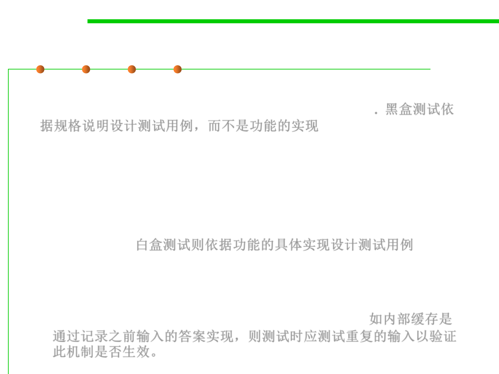

7.5 Testing and Test-First Programming
Black-box vs. White-box testing
▪ Black-box testing means choosing test cases only from the
specification, not the implementation of the function. 黑盒测试依
据规格说明设计测试用例，而不是功能的实现
– We partitioned and looked for boundaries in multiply and max without
looking at the actual code for these functions.
▪ White-box testing (also called glass box testing) means choosing
test cases with knowledge of how the function is actually
implemented. 白盒测试则依据功能的具体实现设计测试用例
– For example, if the implementation selects different algorithms depending
on the input, then you should partition according to those domains.
– If the implementation keeps an internal cache that remembers the answers
to previous inputs, then you should test repeated inputs. 如内部缓存是
通过记录之前输入的答案实现，则测试时应测试重复的输入以验证
此机制是否生效。